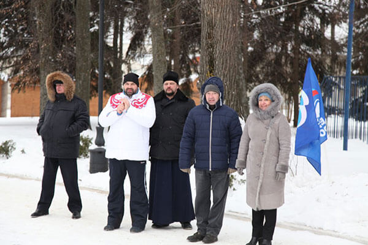

Иерей Сергий Беляков принял участие в спортивном празднике «Зимушка-зима»
В воскресенье, 28 января 2018 года, в Пензенском Центральном парке культуры и отдыха имени В.Г.Белинского состоялся большой спортивный праздник «Зимушка-зима».